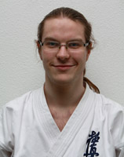

Mirel Luchian [ E-Mail ]
Shodan(1) Kyokushin-Karate seit 1995
Betreibt Kyokushin-Karate seit 1987.
Shodan(1) ATS seit 2006
Benjamin Liebchen
Betreibt Kyokushin-Karate seit Oktober 2007.
Patrick Rongisch
Betreibt Kyokushin-Karate seit November 2007.

Oliver Thiel
Betreibt Kyokushin-Karate seit Dezember 2007.
Alen Mocan
Betreibt Kyokushin-Karate seit Februar 2008.
Patrick Groß
Betreibt Kyokushin-Karate seit Juli 2008.
Julian Kaltschmidt
Betreibt Kyokushin-Karate seit September 2008.
Andor Vogel
Betreibt Kyokushin-Karate seit Juli 2010.
Serkan Tüfekcibasi
Betreibt Kyokushin-Karate seit Oktober 2010.